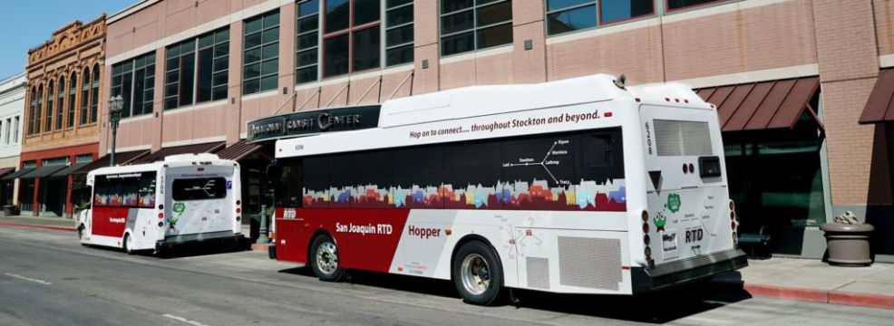

Hop on to connect… throughout Stockton and beyond
RTD Local serves the Stockton Metropolitan Area, connecting RTD’s Express, Intercity, Hopper, and Commuter services. Local routes serve the Downtown Transit Center (DTC), Mall Transfer Station (MTS), and Hammer Transfer Station (HTS).
Metro Hopper
Metro Hopper is a deviated fixed-route service serving popular destinations throughout the Stockton city limits. With seven routes that operate Monday – Friday, 6:00 a.m. to 6:30 p.m., buses run approximately every hour.
In order to accommodate ADA-certified passengers who are not able to reach fixed-route stops, each Hopper can deviate from its normal route a distance of up to one mile. The service covers approximately 75% of the Stockton Metro Area for ADA-certified customers with the one-mile deviation. Reservations are required.*
County Hopper
County Hopper is a deviated fixed-route service serving San Joaquin County and providing intercity connections between Stockton, Tracy, Lodi, Manteca, Ripon, Lathrop, and Escalon. There are 5 weekday routes that operate from 5:30 a.m. to 9:00 p.m.
In order to accommodate passengers who are not able to reach their destinations within a rural area, each County Hopper can deviate from its normal route a distance of up to one mile. Reservations are required.*
Note: Hoppers do not deviate in Lodi and Tracy. Use GrapeLine or Tracer services instead.
*Reservations are required two days in advanced for all Hopper deviations. Hoppers will deviate up to two times per trip. Please call (209) 943-1111 and follow the prompt for Access San Joaquin then Dial-A-Ride certification or deviation reservations